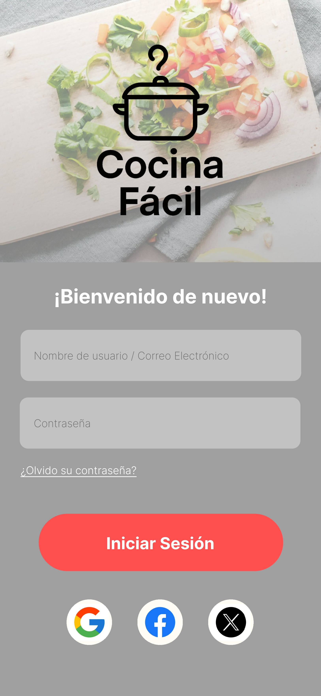
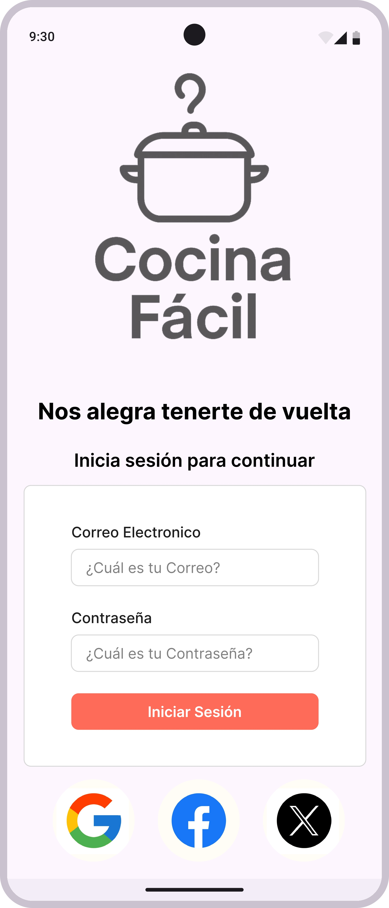
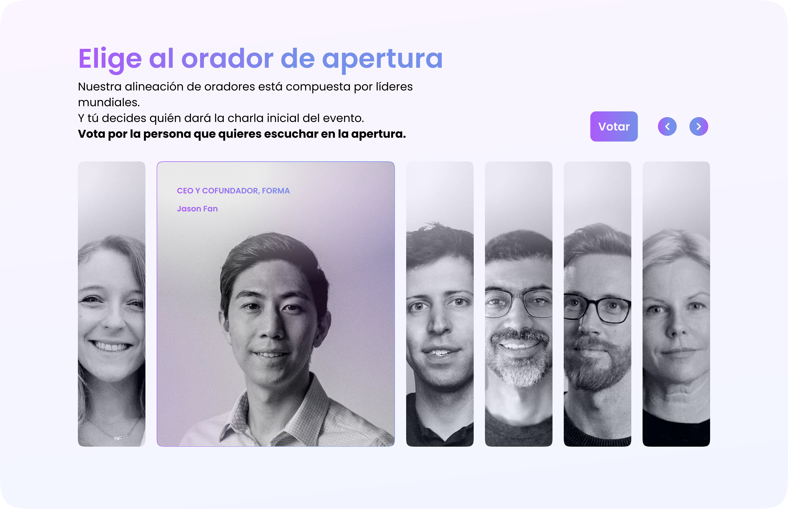
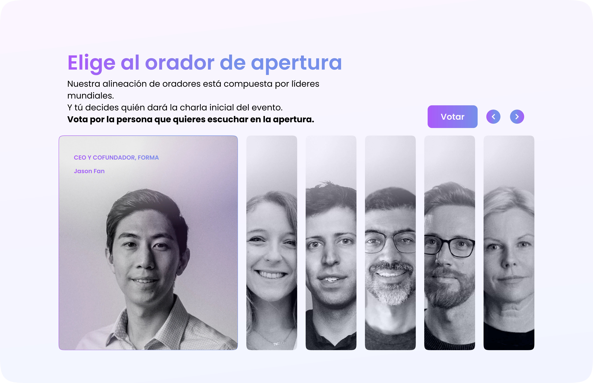

<style>
@import url('https://fonts.googleapis.com/css2?family=DM+Serif+Display:ital@0;1&family=DM+Sans:ital,opsz,wght@0,9..40,300;0,9..40,400;0,9..40,500;1,9..40,300&display=swap');

*{margin:0;padding:0;box-sizing:border-box}
:root{
--teal:#0d6e6e;--teal-light:#e0f5f5;--teal-mid:#1a9a9a;
--coral:#e85d3a;--coral-light:#fdf0ec;
--ink:#0f1923;--ink-mid:#3a4a5a;--ink-muted:#7a8a9a;
--sand:#f8f6f2;--white:#ffffff;
--ff-display:'DM Serif Display',serif;
--ff-body:'DM Sans',sans-serif;
}
html{scroll-behavior:smooth;font-size:19px}
body{font-family:var(--ff-body);background:var(--white);color:var(--ink);overflow-x:hidden}

/* NAV */
nav{position:fixed;top:0;left:0;right:0;z-index:100;background:rgba(255,255,255,0.92);backdrop-filter:blur(12px);border-bottom:1px solid rgba(13,110,110,0.1);padding:0 1.5rem}
.nav-inner{max-width:1100px;margin:0 auto;display:flex;align-items:center;justify-content:space-between;height:56px}
.nav-logo{font-family:var(--ff-display);font-size:1.1rem;color:var(--teal);letter-spacing:-0.02em}
.nav-links{display:flex;gap:1.5rem;list-style:none}
.nav-links a{font-size:0.82rem;font-weight:500;color:var(--ink-mid);text-decoration:none;letter-spacing:0.05em;text-transform:uppercase;transition:color .2s}
.nav-links a:hover{color:var(--teal)}
.nav-cta{background:var(--teal);color:#ffffff !important;padding:0.45rem 1.1rem;border-radius:2rem;font-size:0.82rem;font-weight:500;text-decoration:none;transition:all .2s;display:inline-flex;align-items:center;height:fit-content;line-height:1}
.nav-cta:hover{background:var(--teal-mid);color:#ffffff !important}


.hamburger{display:none;flex-direction:column;gap:5px;cursor:pointer;background:none;border:none;padding:4px}
.hamburger span{display:block;width:22px;height:2px;background:var(--ink);border-radius:2px;transition:all .3s}
.mobile-menu{display:none;position:fixed;top:56px;left:0;right:0;background:#fff;border-bottom:1px solid rgba(13,110,110,0.1);padding:1.5rem;z-index:99;flex-direction:column;gap:1rem}
.mobile-menu a{font-size:1rem;color:var(--ink-mid);text-decoration:none;font-weight:500;padding:0.5rem 0;border-bottom:1px solid rgba(0,0,0,0.06)}
.mobile-menu.open{display:flex}

/* SECTIONS */
section{padding:5rem 1.5rem}
.container{max-width:1100px;margin:0 auto}

/* HERO */
#hero{padding-top:7rem;padding-bottom:4rem;background:var(--sand);position:relative;overflow:hidden}
.hero-grid{display:grid;grid-template-columns:1fr 1fr;gap:3rem;align-items:center;max-width:1100px;margin:0 auto}
.hero-tag{display:inline-flex;align-items:center;gap:0.5rem;background:var(--teal-light);color:var(--teal);font-size:0.78rem;font-weight:500;padding:0.35rem 0.9rem;border-radius:2rem;letter-spacing:0.04em;text-transform:uppercase;margin-bottom:1.5rem}
.hero-tag-dot{width:6px;height:6px;background:var(--teal);border-radius:50%;animation:pulse 2s infinite}
@keyframes pulse{0%,100%{opacity:1}50%{opacity:0.4}}
h1.hero-name{font-family:var(--ff-display);font-size:clamp(2.8rem,6vw,4.2rem);line-height:1.05;letter-spacing:-0.03em;color:var(--ink);margin-bottom:0.4rem}
h1.hero-name em{font-style:italic;color:var(--teal)}
.hero-role{font-size:1.15rem;font-weight:300;color:var(--ink-mid);margin-bottom:1.2rem;letter-spacing:0.01em}
.hero-value{font-size:1.05rem;color:var(--ink-mid);line-height:1.6;margin-bottom:2rem;max-width:420px;border-left:3px solid var(--coral);padding-left:1rem}
.hero-value strong{color:var(--ink);font-weight:500}
.hero-btns{display:flex;gap:1rem;flex-wrap:wrap}
.btn-primary{background:var(--teal);color:#fff;padding:0.75rem 1.6rem;border-radius:2rem;font-size:0.9rem;font-weight:500;text-decoration:none;transition:all .2s;display:inline-block}
.btn-primary:hover{background:var(--teal-mid);transform:translateY(-1px)}
.btn-outline{border:1.5px solid var(--teal);color:var(--teal);padding:0.75rem 1.6rem;border-radius:2rem;font-size:0.9rem;font-weight:500;text-decoration:none;transition:all .2s;display:inline-block}
.btn-outline:hover{background:var(--teal-light)}
.hero-visual{position:relative;display:flex;justify-content:center;align-items:center}
.avatar-ring{width:280px;height:280px;border-radius:50%;background:var(--teal-light);display:flex;align-items:center;justify-content:center;position:relative;border:3px solid var(--teal)}
.avatar-ring::before{content:'';position:absolute;inset:-12px;border-radius:50%;border:1px dashed rgba(13,110,110,0.3)}
.avatar-initials{font-family:var(--ff-display);font-size:4rem;color:var(--teal);font-style:italic}
.float-badge{position:absolute;background:#fff;border:1px solid rgba(13,110,110,0.15);border-radius:0.75rem;padding:0.5rem 0.75rem;font-size:0.75rem;box-shadow:0 4px 16px rgba(0,0,0,0.08)}
.float-badge.b1{top:20px;right:-10px;color:var(--teal)}
.float-badge.b2{bottom:40px;left:-20px;color:var(--coral)}
.float-badge .badge-num{font-size:1.1rem;font-weight:500;display:block}
.hero-deco{position:absolute;bottom:-40px;right:10%;width:200px;height:200px;border-radius:50%;background:rgba(232,93,58,0.06);pointer-events:none}

/* SOBRE MÍ */
#sobre-mi{background:var(--white)}
.section-label{font-size:0.75rem;font-weight:500;letter-spacing:0.1em;text-transform:uppercase;color:var(--coral);margin-bottom:0.75rem}
h2.section-title{font-family:var(--ff-display);font-size:clamp(2rem,4vw,2.8rem);line-height:1.15;letter-spacing:-0.02em;color:var(--ink);margin-bottom:1.5rem}
h2.section-title em{font-style:italic;color:var(--teal)}
.about-grid{display:grid;grid-template-columns:1fr 1fr;gap:4rem;align-items:start}
.about-story{font-size:1rem;color:var(--ink-mid);line-height:1.75}
.about-story p{margin-bottom:1rem}
.about-story p:last-child{margin-bottom:0}
.strengths-grid{display:grid;gap:1rem;margin-top:2rem}
.strength-card{background:var(--sand);border-radius:1rem;padding:1.25rem;border-left:3px solid var(--teal)}
.strength-icon{font-size:1.3rem;margin-bottom:0.5rem}
.strength-title{font-weight:500;font-size:0.95rem;color:var(--ink);margin-bottom:0.25rem}
.strength-desc{font-size:0.85rem;color:var(--ink-muted);line-height:1.5}
.avail-badge{display:inline-flex;align-items:center;gap:0.5rem;background:rgba(13,110,110,0.08);border:1px solid rgba(13,110,110,0.2);border-radius:2rem;padding:0.5rem 1rem;font-size:0.85rem;color:var(--teal);margin-top:1.5rem;font-weight:500}
.avail-dot{width:8px;height:8px;background:#22c55e;border-radius:50%;animation:pulse 1.5s infinite}

/* PROYECTOS */
#proyectos{background:var(--sand)}
.projects-intro{max-width:600px;margin-bottom:3rem}
.project-card{background:var(--white);border-radius:1.5rem;overflow:hidden;margin-bottom:3rem;border:1px solid rgba(0,0,0,0.06)}
.project-header{padding:2rem 2rem 1.5rem;display:grid;grid-template-columns:1fr auto;gap:1rem;align-items:start}
.project-num{font-family:var(--ff-display);font-size:3.5rem;color:rgba(13,110,110,0.12);line-height:1;font-style:italic}
.project-tags{display:flex;gap:0.5rem;flex-wrap:wrap;justify-content:flex-end}
.tag{font-size:0.72rem;font-weight:500;padding:0.3rem 0.7rem;border-radius:2rem;letter-spacing:0.03em}
.tag-teal{background:var(--teal-light);color:var(--teal)}
.tag-coral{background:var(--coral-light);color:var(--coral)}
.tag-gray{background:#f0f0f0;color:#666}
h3.project-title{font-family:var(--ff-display);font-size:1.7rem;color:var(--ink);letter-spacing:-0.02em;margin-bottom:0.5rem}
.project-subtitle{font-size:0.9rem;color:var(--ink-muted);font-style:italic}
.project-body{padding:0 2rem 2rem}
.project-context{font-size:0.95rem;color:var(--ink-mid);line-height:1.65;margin-bottom:1.5rem;padding:1rem 1.25rem;background:rgba(13,110,110,0.04);border-radius:0.75rem;border-left:3px solid var(--teal)}
.process-steps{display:grid;grid-template-columns:repeat(3,1fr);gap:1rem;margin-bottom:1.5rem}
.step{background:var(--sand);border-radius:0.75rem;padding:1rem;text-align:center}
.step-arrow{font-size:0.8rem;color:var(--ink-muted);margin-top:0.25rem}
.step-label{font-size:0.78rem;font-weight:500;color:var(--ink);margin-bottom:0.25rem}
.step-detail{font-size:0.72rem;color:var(--ink-muted);line-height:1.4}
.metrics-row{display:grid;grid-template-columns:repeat(3,1fr);gap:1rem;margin-bottom:1.5rem}
.metric{background:var(--teal-light);border-radius:0.75rem;padding:1rem;text-align:center}
.metric.coral{background:var(--coral-light)}
.metric-val{font-family:var(--ff-display);font-size:1.8rem;color:var(--teal);font-style:italic;line-height:1}
.metric.coral .metric-val{color:var(--coral)}
.metric-label{font-size:0.72rem;color:var(--ink-muted);margin-top:0.25rem;line-height:1.3}
.visual-mockup{border-radius:0.75rem;overflow:hidden;border:1px solid rgba(0,0,0,0.08);margin-bottom:1rem}
.mockup-bar{background:var(--ink);padding:0.4rem 0.75rem;display:flex;gap:0.4rem;align-items:center}
.mockup-dot{width:8px;height:8px;border-radius:50%}
.mockup-screen{background:var(--sand);padding:1.5rem;min-height:120px;display:flex;gap:1rem}
.tools-row{display:flex;gap:0.5rem;flex-wrap:wrap;margin-top:0.5rem}
.result-highlight{font-size:0.92rem;color:var(--ink);line-height:1.6;padding:1rem 1.25rem;background:rgba(232,93,58,0.05);border-radius:0.75rem;border-left:3px solid var(--coral)}
.result-highlight strong{color:var(--coral)}

/* Before/After visual */
.ba-container{display:grid;grid-template-columns:1fr 1fr;gap:1rem;margin-bottom:1rem}
.ba-panel{border-radius:0.75rem;overflow:hidden;border:1px solid rgba(0,0,0,0.08)}
.ba-label{font-size:0.72rem;font-weight:500;padding:0.4rem 0.75rem;letter-spacing:0.04em;text-transform:uppercase}
.ba-before .ba-label{background:#f5e6e6;color:#c0392b}
.ba-after .ba-label{background:#e6f5e6;color:#27ae60}
.ba-screen{padding:1rem;background:var(--sand);min-height:100px}

/* Heatmap visual */
.heatmap-visual{border-radius:0.75rem;background:var(--sand);padding:1.5rem;border:1px solid rgba(0,0,0,0.08);margin-bottom:1rem}
.hm-title{font-size:0.78rem;font-weight:500;color:var(--ink-muted);margin-bottom:0.75rem;letter-spacing:0.03em;text-transform:uppercase}
.hm-grid{display:grid;grid-template-columns:repeat(8,1fr);gap:3px}
.hm-cell{height:24px;border-radius:3px}

/* EXPERIENCIA */
#experiencia{background:var(--white)}
.exp-grid{display:grid;grid-template-columns:1fr 1fr;gap:3rem;align-items:start}
.exp-intro{font-size:1rem;color:var(--ink-mid);line-height:1.7;margin-bottom:1.5rem}
.skills-transfer{display:grid;gap:1rem}
.transfer-item{display:flex;gap:1rem;align-items:flex-start;padding:1.25rem;background:var(--sand);border-radius:0.75rem}
.transfer-icon-wrap{width:40px;height:40px;border-radius:0.5rem;background:var(--teal-light);display:flex;align-items:center;justify-content:center;flex-shrink:0;font-size:1.1rem}
.transfer-title{font-weight:500;font-size:0.92rem;color:var(--ink);margin-bottom:0.2rem}
.transfer-desc{font-size:0.82rem;color:var(--ink-muted);line-height:1.5}
.timeline{position:relative;padding-left:2rem}
.timeline::before{content:'';position:absolute;left:0.5rem;top:0;bottom:0;width:1px;background:linear-gradient(to bottom,var(--teal),rgba(13,110,110,0.1))}
.tl-item{position:relative;margin-bottom:2rem}
.tl-dot{position:absolute;left:-2rem;top:0.2rem;width:12px;height:12px;border-radius:50%;background:var(--teal);border:2px solid var(--white);box-shadow:0 0 0 2px var(--teal-light)}
.tl-period{font-size:0.72rem;font-weight:500;color:var(--teal);letter-spacing:0.05em;text-transform:uppercase;margin-bottom:0.25rem}
.tl-role{font-weight:500;font-size:0.95rem;color:var(--ink);margin-bottom:0.2rem}
.tl-context{font-size:0.82rem;color:var(--ink-muted);line-height:1.5}

/* CONTACTO */
#contacto{background:var(--teal);position:relative;overflow:hidden}
#contacto::before{content:'';position:absolute;top:-80px;right:-80px;width:300px;height:300px;border-radius:50%;background:rgba(255,255,255,0.05)}
#contacto::after{content:'';position:absolute;bottom:-60px;left:-40px;width:200px;height:200px;border-radius:50%;background:rgba(232,93,58,0.2)}
.contact-inner{position:relative;z-index:1;text-align:center;max-width:600px;margin:0 auto}
.contact-inner .section-label{color:rgba(255,255,255,0.6)}
h2.contact-title{font-family:var(--ff-display);font-size:clamp(2rem,5vw,3rem);color:#fff;letter-spacing:-0.02em;margin-bottom:0.75rem;line-height:1.15}
h2.contact-title em{font-style:italic;color:rgba(255,255,255,0.7)}
.contact-sub{font-size:1rem;color:rgba(255,255,255,0.75);margin-bottom:2.5rem;line-height:1.6}
.contact-links{display:flex;gap:1rem;justify-content:center;flex-wrap:wrap;margin-bottom:2rem}
.contact-link{display:inline-flex;align-items:center;gap:0.6rem;padding:0.8rem 1.4rem;border-radius:2rem;font-size:0.9rem;font-weight:500;text-decoration:none;transition:all .2s}
.contact-link.email{background:#fff;color:var(--teal)}
.contact-link.email:hover{background:var(--teal-light)}
.contact-link.linkedin{background:rgba(255,255,255,0.15);color:#fff;border:1.5px solid rgba(255,255,255,0.3)}
.contact-link.linkedin:hover{background:rgba(255,255,255,0.25)}
.contact-location{font-size:0.82rem;color:rgba(255,255,255,0.5);letter-spacing:0.03em}

/* FOOTER */
footer{background:var(--ink);padding:1.5rem;text-align:center}
footer p{font-size:0.78rem;color:rgba(255,255,255,0.3)}

/* FADE IN */
.fade-in{opacity:0;transform:translateY(20px);transition:opacity 0.6s ease,transform 0.6s ease}
.fade-in.visible{opacity:1;transform:none}

/* RESPONSIVE */
@media(max-width:768px){
  .nav-links,.nav-cta{display:none}
  .hamburger{display:flex}
  .hero-grid,.about-grid,.exp-grid{grid-template-columns:1fr}
  .hero-visual{order:-1}
  .avatar-ring{width:180px;height:180px}
  .avatar-initials{font-size:2.5rem}
  .float-badge.b1{right:5px}
  .float-badge.b2{left:5px}
  .process-steps{grid-template-columns:1fr}
  .metrics-row{grid-template-columns:1fr 1fr}
  .ba-container{grid-template-columns:1fr}
  .project-header{grid-template-columns:1fr}
  .project-tags{justify-content:flex-start}
  section{padding:3.5rem 1.25rem}
  .hero-deco{display:none}
}
</style>

<nav>
  <div class="nav-inner">
    <span class="nav-logo">VK</span>
    <ul class="nav-links">
      <li><a href="#sobre-mi">Sobre mí</a></li>
      <li><a href="#proyectos">Proyectos</a></li>
      <li><a href="#experiencia">Experiencia</a></li>
      <li><a href="#contacto" class="nav-cta">Contactar</a></li>
    </ul>
    <button class="hamburger" onclick="toggleMenu()" aria-label="Menú">
      <span></span><span></span><span></span>
    </button>
  </div>
  <div class="mobile-menu" id="mobileMenu">
    <a href="#sobre-mi" onclick="toggleMenu()">Sobre mí</a>
    <a href="#proyectos" onclick="toggleMenu()">Proyectos</a>
    <a href="#experiencia" onclick="toggleMenu()">Experiencia</a>
    <a href="#contacto" onclick="toggleMenu()">Contactar</a>
  </div>
</nav>

<section id="hero">
  <div class="hero-deco"></div>
  <div class="hero-grid">
    <div class="hero-content fade-in">
      <div class="hero-tag">
        <span class="hero-tag-dot"></span>
        Disponible · Remoto LATAM
      </div>
      <h1 class="hero-name">Valeria<br><em>Kronfly</em></h1>
      <p class="hero-role">UX/UI Designer Junior</p>
      <p class="hero-value">Diseño interfaces que <strong>funcionan en el mundo real</strong> — porque entiendo los datos detrás de ellas y el código que las construye.</p>
      <div class="hero-btns">
        <a href="#proyectos" class="btn-primary">Ver proyectos</a>
        <a href="#contacto" class="btn-outline">Contactar</a>
      </div>
    </div>
    <div class="hero-visual fade-in">
      <div class="avatar-ring">
        <span class="avatar-initials">VK</span>
        <div class="float-badge b1">
          <span class="badge-num">3+</span>años con datos complejos
        </div>
        <div class="float-badge b2">
          <span class="badge-num">100%</span>tasa de éxito en tests
        </div>
      </div>
    </div>
  </div>
</section>

<section id="sobre-mi">
  <div class="container">
    <div class="about-grid">
      <div class="fade-in">
        <p class="section-label">Sobre mí</p>
        <h2 class="section-title">De planillas<br>a <em>productos</em></h2>
        <div class="about-story">
          <p>Durante tres años gestioné la información de más de 400 trabajadores: turnos, contratos, inventarios, inconsistencias. Todo en Excel. Todo bajo presión. Aprendí que los datos no mienten — y que las personas sí abandonan cuando una interfaz las confunde.</p>
          <p>Eso me llevó a hacer la pregunta obvia: ¿por qué no diseñar las herramientas que la gente realmente necesita usar? Con una base en Desarrollo de Software y formación especializada en UX/UI, hoy conecto investigación de usuarios, análisis cuantitativo y criterio técnico en cada decisión de diseño.</p>
          <p>No solo entrego pantallas bonitas. Entrego decisiones justificadas con datos, listas para un handoff real.</p>
        </div>
        <div class="avail-badge">
          <span class="avail-dot"></span>
          Disponible para oportunidades · Bogotá / Remoto
        </div>
      </div>
      <div class="strengths-grid fade-in">
        <div class="strength-card">
          <div class="strength-icon">🔍</div>
          <div class="strength-title">Investigación con usuarios</div>
          <div class="strength-desc">Tests de usabilidad, análisis de heatmaps y síntesis de hallazgos en recomendaciones accionables.</div>
        </div>
        <div class="strength-card">
          <div class="strength-icon">📊</div>
          <div class="strength-title">Diseño basado en datos</div>
          <div class="strength-desc">3 años interpretando datos complejos de RRHH me enseñaron a tomar decisiones con evidencia, no suposiciones.</div>
        </div>
        <div class="strength-card">
          <div class="strength-icon">⚙️</div>
          <div class="strength-title">Criterio técnico</div>
          <div class="strength-desc">Background en desarrollo de software: diseño componentes que los devs pueden implementar sin fricción.</div>
        </div>
      </div>
    </div>
  </div>
</section>

<section id="proyectos">
  <div class="container">
    <div class="projects-intro fade-in">
      <p class="section-label">Proyectos seleccionados</p>
      <h2 class="section-title">Trabajo real,<br><em>proceso visible</em></h2>
    </div>

    <div class="project-card fade-in">
      <div class="project-header">
        <div>
          <div class="project-num">01</div>
          <h3 class="project-title">Rediseño UI — Cocina Fácil</h3>
          <p class="project-subtitle">Sistema de diseño · Bootcamp Tripleten | Sprint 9</p>
        </div>
        <div class="project-tags">
          <span class="tag tag-teal">Figma</span>
          <span class="tag tag-teal">Design Systems</span>
          <span class="tag tag-gray">UI Design</span>
        </div>
      </div>
      <div class="project-body">
        <div class="project-context">
          <strong>Problema:</strong> La pantalla de login presentaba inconsistencias visuales — colores fuera de sistema, jerarquía tipográfica confusa y componentes sin estados definidos. El resultado era una interfaz que no comunicaba confianza ni era handoff-ready.
        </div>

        <div class="ba-container">
          <div class="ba-panel ba-before">
            <div class="ba-label">Antes — Inconsistente</div>
            <div class="ba-screen">
              <div style="width:100%">
                


              </div>
            </div>
          </div>
          <div class="ba-panel ba-after">
            <div class="ba-label">Después — Sistema coherente</div>
            <div class="ba-screen">
              <div style="width:100%">
                


              </div>
            </div>
          </div>
        </div>

        <div class="process-steps">
          <div class="step">
            <div class="step-label">Auditoría visual</div>
            <div class="step-detail">Mapeo de inconsistencias: colores, tipografía, espaciado</div>
          </div>
          <div class="step">
            <div class="step-label">Diseño atómico</div>
            <div class="step-detail">Componentes con 4 estados: default, hover, focus, error</div>
          </div>
          <div class="step">
            <div class="step-label">Sistema tipográfico</div>
            <div class="step-detail">Jerarquía clara con Inter, escalas y tokens documentados</div>
          </div>
        </div>

        <div class="result-highlight">
          <strong>Resultado:</strong> Interfaz 100% consistente con design tokens documentados, componentes en 4 estados y entrega lista para handoff técnico sin ambigüedades.
        </div>
        <div class="tools-row">
          <span class="tag tag-teal">Figma</span>
          <span class="tag tag-gray">Design Tokens</span>
          <span class="tag tag-gray">Atomic Design</span>
          <span class="tag tag-gray">Component Library</span>
        </div>
      </div>
    </div>

    <div class="project-card fade-in">
      <div class="project-header">
        <div>
          <div class="project-num">02</div>
          <h3 class="project-title">Test de Usabilidad — Elección de Orador</h3>
          <p class="project-subtitle">User Research · Bootcamp Tripleten | Sprint 11</p>
        </div>
        <div class="project-tags">
          <span class="tag tag-coral">Maze</span>
          <span class="tag tag-teal">Figma</span>
          <span class="tag tag-gray">User Research</span>
        </div>
      </div>
      <div class="project-body">
        <div class="project-context">
          <strong>Problema:</strong> El flujo de votación generaba confusión en el paso de selección: los usuarios no entendían si habían elegido correctamente un orador. Alta tasa de clics erróneos y tiempo de tarea elevado indicaban un fallo de comunicación visual.
        </div>

        <div class="metrics-row">
          <div class="metric">
            <div class="metric-val">18.3%</div>
            <div class="metric-label">clics erróneos antes de la iteración</div>
          </div>
          <div class="metric">
            <div class="metric-val">11.5s</div>
            <div class="metric-label">tiempo promedio de tarea en V1</div>
          </div>
          <div class="metric coral">
            <div class="metric-val">100%</div>
            <div class="metric-label">tasa de éxito en versión final</div>
          </div>
        </div>

        <div class="heatmap-visual">
          <div class="hm-title">Evolución del flujo de selección</div>
          <div style="display:grid;grid-template-columns:1fr 1fr;gap:1rem">
            <div>
              <div style="font-size:0.72rem;color:#c0392b;margin-bottom:6px;font-weight:450">V1 — Confusión en la selección del usuario</div>
              <div class="hm-grid">
                

              </div>
            </div>
            <div>
              <div style="font-size:0.72rem;color:#27ae60;margin-bottom:6px;font-weight:450">V2 — Selección clara y priorización del orador elegido</div>
              <div class="hm-grid">
                
              </div>
            </div>
          </div>
        </div>

        <div class="process-steps">
          <div class="step">
            <div class="step-label">5 usuarios en Maze</div>
            <div class="step-detail">Pruebas moderadas con tareas específicas, grabación de rutas</div>
          </div>
          <div class="step">
            <div class="step-label">Análisis de métricas</div>
            <div class="step-detail">Heatmaps, tasas de error y tiempos de tarea cuantificados</div>
          </div>
          <div class="step">
            <div class="step-label">Iteración dirigida</div>
            <div class="step-detail">Feedback visual claro: estados de selección y confirmación explícita</div>
          </div>
        </div>

        <div class="result-highlight">
          <strong>Resultado:</strong> Rediseño del componente de selección con estados visuales inequívocos. 5/5 usuarios completaron la tarea sin errores. Reducción total de clics fuera de área de interacción esperada.
        </div>
        <div class="tools-row">
          <span class="tag tag-coral">Maze</span>
          <span class="tag tag-teal">Figma</span>
          <span class="tag tag-gray">Heatmaps</span>
          <span class="tag tag-gray">Usability Testing</span>
        </div>
      </div>
    </div>
  </div>
</section>

<section id="experiencia">
  <div class="container">
    <div class="exp-grid">
      <div class="fade-in">
        <p class="section-label">Experiencia previa</p>
        <h2 class="section-title">Habilidades que<br><em>se transfieren</em></h2>
        <p class="exp-intro">Tres años gestionando datos complejos en entornos de alta rotación me dieron herramientas que la mayoría de diseñadores juniors no tiene: operar con información ambigua, comunicar con múltiples stakeholders y entregar resultados bajo presión real.</p>
        <div class="skills-transfer">
          <div class="transfer-item">
            <div class="transfer-icon-wrap">🗂</div>
            <div>
              <div class="transfer-title">Arquitectura de información</div>
              <div class="transfer-desc">Organicé y mantuve más de 100 hojas de datos interconectadas. Hoy aplico esa lógica al diseño de flujos y navegación.</div>
            </div>
          </div>
          <div class="transfer-item">
            <div class="transfer-icon-wrap">👥</div>
            <div>
              <div class="transfer-title">Investigación de requerimientos</div>
              <div class="transfer-desc">Relevé necesidades de múltiples áreas con objetivos distintos — exactamente lo que hace un UX researcher con sus stakeholders.</div>
            </div>
          </div>
          <div class="transfer-item">
            <div class="transfer-icon-wrap">⚡</div>
            <div>
              <div class="transfer-title">Iteración bajo presión</div>
              <div class="transfer-desc">Con personal rotando cada 15 días, aprendí a adaptar procesos rápidamente con recursos limitados y cero margen de error.</div>
            </div>
          </div>
        </div>
      </div>
      <div class="timeline fade-in">
        <div class="tl-item">
          <div class="tl-dot"></div>
          <div class="tl-period">2024 — presente</div>
          <div class="tl-role">Formación en UX/UI Design</div>
          <div class="tl-context">Bootcamp intensivo. Proyectos con metodología Design Thinking, prototipado en Figma, investigación con usuarios y testing con herramientas como Maze.</div>
        </div>
        <div class="tl-item">
          <div class="tl-dot"></div>
          <div class="tl-period">2021 — 2024</div>
          <div class="tl-role">Gestión de datos en RRHH y Almacén</div>
          <div class="tl-context">Administración de información de 400+ trabajadores. Excel avanzado, bases de datos, reportes para dirección y coordinación entre áreas operativas y administrativas.</div>
        </div>
        <div class="tl-item">
          <div class="tl-dot"></div>
          <div class="tl-period">Formación base</div>
          <div class="tl-role">Desarrollo de Software</div>
          <div class="tl-context">Base técnica que le permite a Valeria comunicarse sin fricción con equipos de desarrollo y diseñar componentes implementables desde el primer boceto.</div>
        </div>
      </div>
    </div>
  </div>
</section>

<section id="contacto">
  <div class="contact-inner fade-in">
    <p class="section-label">Contacto</p>
    <h2 class="contact-title">¿Tienes un proyecto<br>en <em>mente</em>?</h2>
    <p class="contact-sub">Estoy disponible para posiciones de UX/UI Designer Junior, prácticas profesionales y proyectos freelance en LATAM y modalidad remota.</p>
    <div class="contact-links">
      <a href="mailto:kronflymartinezvaleria@gmail.com" class="contact-link email" target="_blank">
        ✉ kronflymartinezvaleria@gmail.com
      </a>
      <a href="https:/www.linkedin.com/in/valeria-kronfly/" class="contact-link linkedin" target="_blank">
        in LinkedIn
      </a>
    </div>
    <p class="contact-location">📍 Bogotá, Colombia · Remoto LATAM · GMT-5</p>
  </div>
</section>

<footer>
  <p>© Valeria Kronfly Martínez  · Junior UX/UI Designer · 2026</p>
</footer>

<script>
function toggleMenu(){
  const m=document.getElementById('mobileMenu');
  m.classList.toggle('open');
}

document.querySelectorAll('a[href^="#"]').forEach(a=>{
  a.addEventListener('click',e=>{
    const t=document.querySelector(a.getAttribute('href'));
    if(t){e.preventDefault();t.scrollIntoView({behavior:'smooth'});}
  });
});

const obs=new IntersectionObserver(entries=>{
  entries.forEach(e=>{if(e.isIntersecting){e.target.classList.add('visible');}});
},{threshold:0.12});
document.querySelectorAll('.fade-in').forEach(el=>obs.observe(el));
</script>
